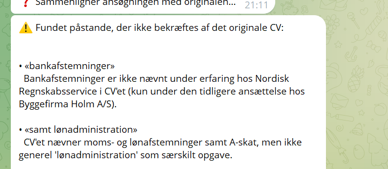
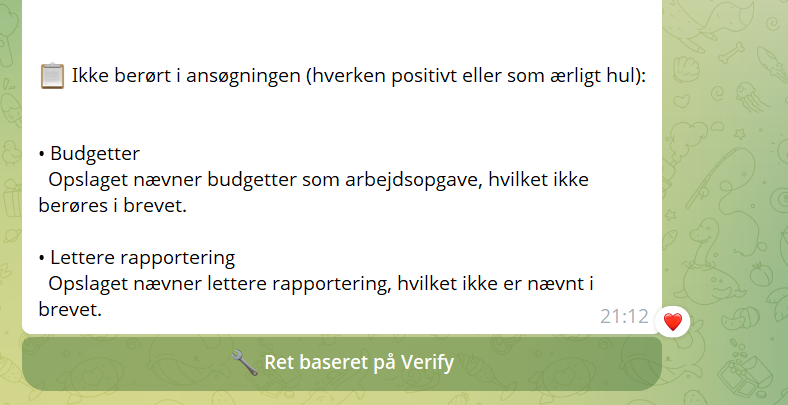
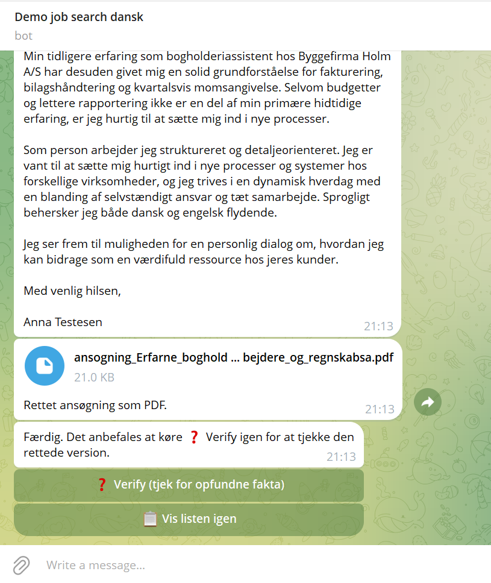
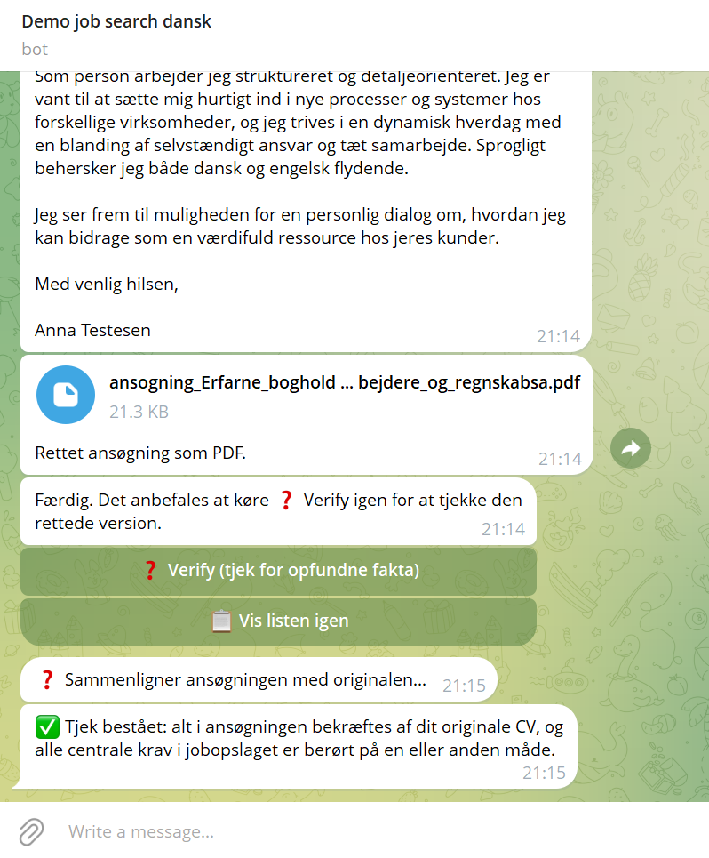

AI that doesn't just write the application — it checks it itself before you see it. A real example: an application for a bookkeeper position at Nordisk Regnskabsservice.
1 · FACT CHECK
Before anything is shown, the AI compares every single claim in the application with your real CV. Here it caught two claims that were not in the CV under the current position.

2 · COVERAGE CHECK
At the same time, the AI compares the application with the job posting itself and flags every important requirement that is neither mentioned as experience nor honestly acknowledged as a gap. Same real result, same message — two requirements from the posting were not addressed in the letter at all.

3 · FIX BASED ON VERIFY
A single click fixes exactly the points Verify found — nothing else is rewritten. The bot immediately generates an updated application as a PDF. In this case it took two rounds: the first fix solved most of the points, but a new Verify check still found one requirement ("Payroll administration and HR-related tasks"), which was fixed in another round.

4 · FINAL CHECK
After the second fix, Verify runs again — now on the updated version. Only when everything is confirmed by your CV and all requirements in the job posting are addressed do you get a clean "passed".
